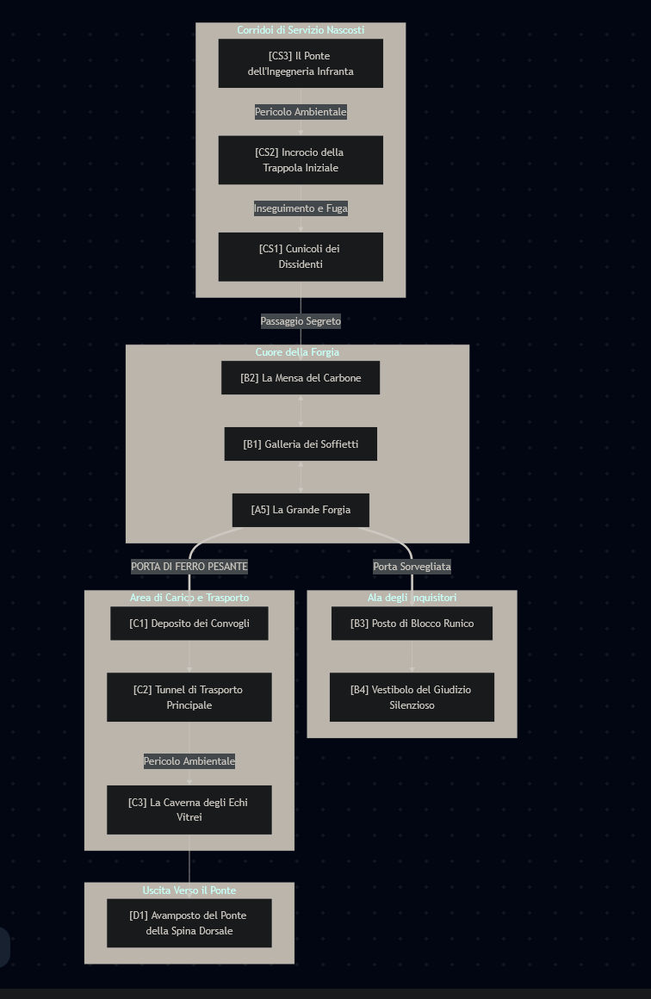

Capitolo 10: La Forgia del Martello e dell’Incudine
Un’avventura di infiltrazione e sopravvivenza ad alta tensione per quattro personaggi di 4° livello, ideata per [Il Tuo Nome da GM Qui]. In questo capitolo, la distinzione tra predatore e preda si dissolve nel calore delle forge Duergar, dove il dogma spietato di una misteriosa fazione si rivelerà una minaccia tanto grande quanto la tirannia industriale di Vecna.
Riepilogo dell’Avventura
La vittoria contro i sabotatori Duergar è stata pagata a caro prezzo. Con il suono delle campane d’allarme che risuona come un rintocco funebre attraverso le viscere della montagna, i Globeseekers sono passati da intrusi a prede ufficiali. Guidati da un terrorizzato ma esperto Chirr-Click, devono ora navigare il cuore pulsante del complesso industriale-militare di Vecna: una rete labirintica di forge, caserme e ponti precari. Ma non sono i soli estranei in questo inferno sotterraneo. Una minacciosa terza fazione, la “Squadra Domino”, opera nell’ombra, applicando la propria, gelida forma di giustizia. Intrappolati tra la furia disciplinata delle guardie Duergar e lo sguardo giudicante di questi nuovi, enigmatici rivali, i personaggi dovranno stringere alleanze disperate, risolvere puzzle mortali e affrontare scontri tattici in cui la sopravvivenza è una ricompensa più preziosa di qualsiasi tesoro.
Regole Speciali
- Competenza Senza Livello (PWL): Questa avventura è bilanciata per questa variante. Le CD, i bonus d’attacco, i Tiri Salvezza e le Classi Armatura di tutte le creature e le sfide sono state calcolate senza aggiungere il livello ai bonus di competenza.
- Progressione Automatica dei Bonus (ABP): I personaggi beneficiano dei bonus di potenziamento e resilienza in base al loro livello. I tesori si concentreranno su oggetti unici, consumabili e rune di proprietà speciali.
Area 1: L’Eco delle Campane
(Stanza d’Ingresso con Guardiano: Un’Apertura Esplosiva che Richiede Tattica e Rapidità)
Preparazione della Scena La sessione si apre in media res. L’odore di ozono e sangue Duergar aleggia ancora nell’aria. La momentanea quiete dopo lo scontro viene violentemente infranta. L’allarme generale trasforma l’ambiente da un dungeon esplorabile a una zona di guerra attiva.
Testo da Leggere ai Giocatori
Il silenzio che segue la caduta del sabotatore Duergar è un’illusione, un respiro trattenuto dal mondo prima dell’urlo. Viene squarciato da un rintocco di ferro, profondo e martellante, un’eco che si propaga attraverso la roccia stessa, un richiamo alle armi che risveglia l’intera fortezza. Istantaneamente, il complesso si anima. Dalle profondità, sentite il clangore metallico di decine di stivali corazzati che marciano all’unisono e ordini gutturali, urlati in una lingua aspra come la pietra, che rimbalzano da un tunnel all’altro. L’alveare è stato disturbato, e voi siete al suo centro.
Dei quattro Duergar iniziali, due sono fuggiti nelle tenebre, mentre un terzo vi lancia un ultimo sguardo carico d’odio. Indietreggiando, ringhia parole che la magia o l’istinto vi traducono con una chiarezza spaventosa: “Stolti di superficie! Per fortuna che la Squadra Domino è in visita! Useranno le vostre teste come esempio per tutti!” Detto questo, svanisce nell’oscurità, lasciandovi con un nuovo, gelido enigma.
“Squadra Domino? Peggio! Molto, molto peggio dei padroni di casa!”, squittisce Chirr-Click, tirandovi per le maniche con la forza della disperazione. “Non pensano, giudicano! Via, ora!“. Il ratfolk vi spinge lungo il corridoio centrale, ma la fuga è già ostacolata.
Tre figure corazzate emergono di corsa da un passaggio laterale. Non sono sabotatori; sono soldati. La loro armatura di piastre nere è coperta di fuliggine ma spietatamente funzionale. Il Duergar al centro, il volto segnato da una cicatrice che gli deforma un sorriso in un ringhio perpetuo, brandisce un pesante martello da guerra in una mano e una rete di ferro nell’altra. Vi indica, abbaiando un ordine. I suoi due compagni alzano immediatamente le loro massicce balestre, formando un muro di scudi e acciaio tra voi e la salvezza. La caccia è iniziata.
In Scena: Dialogo Sotto Pressione
In questi primi, critici istanti, i personaggi reagiscono non solo all’azione, ma alla nuova, sconcertante informazione sulla “Squadra Domino”. Il giocatore che sceglie di parlare per primo imposta il tono della risposta del gruppo.
Smilzo: (Valuta la formazione nemica con la freddezza di un veterano. La sua mano stringe l’alabarda, ora intrisa del potere di Vordekai. Si impone con voce di comando per tentare di controllare il caos.) [Prova di Intimidazione, CD 18] “Falange serrata! Non disperdetevi! Gianni, sul loro fianco, cerca una visuale pulita! Elthon, dammi del fumo o fai crollare il cielo! Liora, prepara la tua stregoneria più subdola! Sfondiamo la loro linea, ORA, prima che ne arrivino altri!”
- (Fallimento): (La frustrazione prende il sopravvento sulla tattica.) “Basta parlare! Carica frontale! Schiacciateli prima che ci schiaccino loro!” (Un ordine brusco che sacrifica la coordinazione per l’aggressività).
Elthon: (I suoi occhi guizzano rapidi, ignorando quasi i soldati per analizzare il loro contesto. Le lenti dei suoi occhialoni roteano, cercando punti deboli strutturali.) [Prova di Creazione, CD 18] “Lì! Il soffitto! Proprio sopra le loro teste! Vedete quelle crepe? Quei puntelli di legno sono marci! Non devo nemmeno colpirli, basta destabilizzare la volta. Datemi un bersaglio immobile e vi regalo una via di fuga… o una tomba per tutti, me compreso! Pronto col botto!”
- (Fallimento): (Il panico annebbia il suo genio.) “L’intera struttura è instabile! Sta per crollare tutto! State indietro!” (Vede correttamente il pericolo, ma non l’opportunità tattica che rappresenta).
Liora: (Chiude gli occhi per un istante, le sue mani che sfiorano le Carte del Fato Contorto. Si concentra sulle energie emotive e spirituali della caverna, cercando di leggere le correnti invisibili dello scontro.) [Prova di Occultismo, CD 19] “Silenzio. Ascoltate. L’aria è cambiata. C’è una presenza nuova qui. Un ordine freddo, geometrico… non è il calore putrido di Vecna. È diverso. I Duergar… non ci stanno solo combattendo. Stanno recitando una parte. Vogliono apparire competenti per qualcun altro. La loro paura non è rivolta interamente a noi. Questo possiamo usarlo.”
- (Fallimento): (Le energie sono troppo caotiche, troppe menti urlano.) “Le loro menti sono fortezze di disciplina e rabbia. Non riesco a leggere nulla… se non una minaccia diretta e brutale. Stanno arrivando.”
Gianni: (Porta con calma il Sigaro dell’Intuizione Cinerea alle labbra, espirando un anello di fumo che si contorce innaturalmente mentre analizza la situazione.) [Prova di Società, CD 18] “‘Squadra Domino’. Gretta, la dissidente della Cripta, ne ha parlato. Un ordine esterno, inquisitori che si credono al di sopra delle parti. Se i Duergar devono fare bella figura con loro, non possono permettersi di sembrare incompetenti. Li attaccheranno in modo prevedibile, seguendo il manuale. La disciplina è il loro punto debole. Spingiamoli all’errore, facciamoli sembrare stupidi davanti ai loro ‘superiori’.”
- (Fallimento): (L’informazione non si collega, rimane solo il problema immediato.) “Non importa chi siano. I rinforzi stanno arrivando. Essere più veloci è l’unica logica che conta. Muoviamoci.”
Incontro Tattico: Unità di Blocco Duergar (Incontro Moderato)
Creature:
- 1 Duergar Taskmaster
Creatura 3 - 2 Duergar Guard
Creatura 2
STATISTICHE COMPLETE (PWL & ABP)
Duergar Taskmaster CREATURA 3
Percezione +8; Scurovisione
Lingue Nanico, Sottocomune
Abilità Atletica +10 (+12 per Spingere), Creazione +7, Intimidazione +8
For +4, Des +1, Cos +3, Int +0, Sag +1, Car +1
CA 18 (Armatura di Piastre); TS Temp +10, Rifl +6, Vol +8 PF 50; Immunità illusioni; Resistenze veleno 5, magia 5 Cecità alla Luce: Se esposto a luce intensa, il Duergar è Accecato per 1 round e Abbacinato finché l’esposizione continua. Velocità 6m
Corpo a Corpo [1A] Martello da Guerra +11 (Spinta), Danno 1d8+6 contundente
A Distanza [1A] Rete +8 (Gittata 3m, Ricarica 1), il bersaglio colpito è Imbrigliato e richiede un’azione di Fuga (Escape) CD 19 per liberarsi.
Incantesimi Innati Divini CD 18; 2° Invisibilità (solo sé stesso), Allargare Persona (solo sé stesso)
Tattiche del Caposquadra [1A] (Concentrazione, Uditivo) Il Taskmaster designa un bersaglio che può vedere. Fino all’inizio del suo prossimo turno, tutti gli alleati Duergar che possono sentire il Taskmaster ottengono un bonus di circostanza di +1 ai tiri per colpire contro quel bersaglio.
Spingere all’Angolo [R] Innesco: Un nemico entro la portata del Duergar tenta di muoversi fuori da uno spazio da lui minacciato. Effetto: Il Taskmaster può usare la sua reazione per effettuare un’azione di Spingere (Shove) contro quel nemico.
Duergar Guard (x2) CREATURA 2
Percezione +7; Scurovisione
Lingue Nanico, Sottocomune
Abilità Atletica +8, Intimidazione +6
For +3, Des +2, Cos +2, Int -1, Sag +1, Car +0
CA 17 (Corazza a Scaglie, Scudo d’Acciaio); TS Temp +9, Rifl +8, Vol +5 PF 30; Immunità illusioni; Resistenze veleno 5 Cecità alla Luce Velocità 6m
Corpo a Corpo [1A] Picco da Guerra +9 (Versatile P), Danno 1d8+5 perforante
A Distanza [1A] Balestra Pesante +8 (Gittata 36m, Ricarica 2), Danno 1d10+2 perforante
Muro di Scudi [R] Innesco: Il Duergar viene bersagliato da un attacco e sta impugnando uno scudo. Effetto: Può usare la sua reazione per Alzare uno Scudo, ottenendo il bonus alla CA, e fino all’inizio del suo prossimo turno, gli alleati adiacenti beneficiano di copertura minore (+1 CA) da quella direzione.
Formazione Serrata: Fintanto che è adiacente ad almeno un alleato Duergar, ottiene un bonus di circostanza di +1 ai Tiri Salvezza su Volontà contro effetti di paura.
Dinamiche dello Scontro
I Duergar sono una macchina da guerra disciplinata.
- Obiettivo Primario: Bloccare e contenere. Il Taskmaster lancerà la sua rete su Smilzo o sul bersaglio più grande per immobilizzarlo, poi userà le sue Tattiche per concentrare il fuoco delle balestre su Liora o Elthon.
- Difesa Coordinata: Le guardie useranno la loro reazione Muro di Scudi per proteggersi a vicenda e il loro leader, rendendo difficile colpirli.
- La Pressione del Tempo: L’obiettivo dei PG è sfondare, non annientare. Ogni round che passa, descrivi il suono dei rinforzi che si avvicina. Al terzo round, l’arrivo è imminente. La fuga è l’unica scelta razionale.
- L’Opportunità Ambientale: Il soffitto instabile (CA 10, Durezza 5, PF 15 per la sezione) è la chiave. Se Elthon riesce a farlo crollare, non danneggerà i Duergar, ma creerà una barriera di detriti e polvere dietro di loro, bloccando efficacemente i rinforzi e concedendo al gruppo preziosi secondi per fuggire.
Momenti per Brillare
- Elthon: Deve sfruttare la sua conoscenza di Creazione. Può decidere di usare una delle sue bombe o un colpo di cannone per far crollare il soffitto. Un successo qui non è solo danno, è controllo tattico del campo di battaglia.
- Gianni: Con il suo acume, può essere colui che individua il punto debole strutturale. Il suo ruolo è quello del cervello dell’operazione, trasformando le osservazioni in vantaggi tattici concreti. Può usare Devise a Stratagem su un bersaglio e poi comunicare al gruppo dove colpire per ottenere il massimo effetto.
- Smilzo: È l’ariete. Deve tenere impegnato il Taskmaster e assorbire i danni mentre gli altri lavorano alla soluzione. La sua Lama Psionica del Silenzio è perfetta per colpire un nemico che si affida a comandi uditivi come il Taskmaster, disturbandolo (anche solo narrativamente).
- Liora: È la variabile caotica. La sua Pesca del Fato può ribaltare le sorti. Un’illusione ben piazzata, un comando sussurrato, un tentacolo del vuoto che immobilizza un nemico… il suo ruolo è quello di spezzare la disciplina Duergar con l’imprevedibilità della magia selvaggia.
Conclusione e Ricompensa
Il successo qui si misura nella fuga, non nell’annientamento. Superare la linea di blocco, possibilmente sigillando il passaggio alle loro spalle, è la vera vittoria.
- Tesoro: Nessuno. Non c’è tempo per saccheggiare. La ricompensa è la sopravvivenza e l’opportunità di raggiungere la fase successiva.
- XP: Completare la fuga tattica garantisce al gruppo 80 XP (per aver superato un Incontro Moderato in modo intelligente).
La sessione prosegue senza sosta verso l’Area 2, con i personaggi che si gettano nelle profondità sconosciute dei tunnel di servizio, il suono della caccia che si attenua lentamente alle loro spalle… per ora.
Area 2: La Stanza della Scelta
(La Stanza del Puzzle Sociale: Una Tensa Tregua tra le Ombre)
Preparazione della Scena
L’inseguimento furioso lascia il posto a un silenzio quasi assordante. Guidati dall’agile Chirr-Click, vi siete inoltrati in una rete di tunnel di servizio dimenticati, dove l’odore di carbone e metallo è sostituito da quello stantio di polvere e umidità. Il suono dei vostri cuori che battono è ora più forte del clangore degli stivali dei vostri inseguitori. Il ratfolk si ferma davanti a una sezione della parete che sembra solida, ma con un abile movimento, sposta una lastra di roccia rivelando una stretta fessura.
Testo da Leggere ai Giocatori
“Dentro. Ora. Non per molto”, squittisce Chirr-Click, la sua solita spavalderia sostituita da un terrore genuino. “Le loro pattuglie evitano questi vecchi passaggi. Troppo instabili. Ci darà un’ora, forse meno, se gli dei che non prego ci sorridono.”
Scivolando attraverso l’apertura, entrate in una caverna naturale. Non è grande, appena sufficiente a contenervi tutti. L’aria è ferma, fredda, e porta con sé un odore acre di paura e sudore. Una singola pozza d’acqua stagnante riflette debolmente la luce delle vostre torce. Non siete soli. Rannicchiati nell’angolo più lontano, quasi fusi con le ombre, ci sono altre figure.
Non sono soldati. I loro abiti sono stracci da minatori, i volti scavati dalla fatica e dalla malnutrizione. Una nana Duergar, il cui ventre prominente tradisce una gravidanza avanzata, si para istintivamente davanti a un maschio anziano e a due bambini piccoli, che si aggrappano alle sue gambe. Alza un piccone arrugginito, ma le sue braccia tremano per la debolezza più che per la rabbia.
I suoi occhi, iniettati di sangue e dilatati dal terrore, si fissano su di voi. Vi squadra da capo a piedi, notando le vostre armi, le vostre ferite, l’assenza delle insegne dei guardiani della forgia. La minaccia nella sua postura si affievolisce, sostituita da una disperazione palpabile.
“Voi… non siete di Korgan”, mormora nella lingua del Sottosuolo, la sua voce un sussurro rauco e incrinato. “Il vostro odore è di superficie. Di polvere e cielo, non di fuliggine e obbedienza cieca. Siete… la causa di quelle campane? Siete venuti anche voi per via degli Ispettori? O siete solo altri ratti in trappola, come noi?”
In Scena: Un Dialogo Sull’Orlo del Baratro
Questo è un incontro puramente sociale. Gretta Fendiroccia, la nana, e la sua famiglia sono dei dissidenti. Non sono una minaccia, ma un’opportunità di scoprire la complessa politica di questo inferno sotterraneo e un test per la morale del gruppo. Ogni personaggio può tentare un approccio diverso per guadagnare la loro fiducia. Il fallimento non impedirà la conversazione, ma la renderà più difficile e meno fruttuosa.
Gianni: (Si avvicina lentamente, spegnendo la punta incandescente del suo sigaro contro un sasso per dimostrare intenzioni non ostili. La sua voce è calma, misurata, quella di un professionista che cerca informazioni.)
[Prova di Diplomazia, CD 19] “Siamo decisamente la causa dell’allarme. E sì, abbiamo sentito parlare di questi ‘Ispettori’. Non siamo servi di Korgan, né di Vecna. Siamo… una terza parte con un interesse nel vedere entrambi cadere. Condividete ciò che sapete e potremo assicurarci che questo rifugio rimanga sicuro. I segreti sono più preziosi dell’oro, qui sotto. E io sono un ottimo cliente.”
- (Fallimento): (Il suo tono diventa più freddo, più inquisitorio, tradendo la sua natura da investigatore e non da salvatore.) “Dettagli. Ora. Chi sono questi ispettori? Cosa cercano? Le vostre vite potrebbero dipendere dalle informazioni che mi date.” (Questo li spaventa. Gretta risponderà a monosillabi, omettendo dettagli cruciali.)
Smilzo: (Osserva i bambini, un lampo di dolore che attraversa i suoi occhi mentre un’eco della sua famiglia perduta gli stringe il cuore. Fa un passo avanti, non minaccioso, ma come uno scudo. La sua voce è profonda, risonante del potere e della tragedia di Vordekai.)
[Prova di Religione, CD 20] “Anche il mio dio è un prigioniero, la sua grandezza incatenata dalla ‘legge’ e dalla ‘luce’ di tiranni autoproclamati. Conosco la vostra disperazione, la sento come mia. Non siamo qui per giudicarvi, né per usarvi. Combattiamo per un mondo dove nessuno debba più nascondersi nell’oscurità per paura della fede altrui. Aiutateci a capire il nostro nemico comune.”
- (Fallimento): (La sua rabbia contro gli Dei Antichi prevale sulla compassione, il suo tono diventa duro e accusatorio.) “Il vostro capitano Korgan si piega a una legge che non è la sua. Chi serve due padroni è uno schiavo senza valore. Perché dovremmo aiutarvi?” (Questo li terrorizza, vedendo in lui un altro fanatico, solo di una fede diversa).
Liora: (Stringe le sue carte, sentendo la marea di paura e disperazione nella caverna. I suoi occhi si fissano su Gretta, cercando un legame non di parole, ma di empatia.)
[Prova di Diplomazia, CD 19, con focus sulla Compassione] “Vediamo il terrore nei vostri occhi, e lo riconosciamo. Lo portiamo anche noi. Non siamo qui per farvi del male. Ogni vita è un filo del fato, e oggi i nostri si sono intrecciati. Permetteteci di essere un nodo di forza, non un cappio. Dateci solo la verità, e noi vi daremo un momento di pace.”
- (Fallimento): (Tenta di usare la sua magia per una divinazione rapida, ma l’aura di paura è troppo forte, e le parole le escono fredde e distaccate.) “Il destino vi ha messo sulla nostra strada. Che ciò sia una benedizione o una maledizione dipende da voi. Parlate.” (Il suo approccio risulta minaccioso e calcolatore).
Elthon: (Si guarda intorno, analizzando la caverna e il logorio degli attrezzi dei minatori. Il suo approccio è pratico, quasi commerciale.)
[Prova di Diplomazia, CD 20, o Creazione per mostrare competenza] “Okay, okay, mettiamo da parte le chiacchiere spaventose. Quel piccone è quasi inutile. La vostra lanterna sta per esaurirsi. Io sono un inventore. Voi avete informazioni. Io posso riparare i vostri attrezzi, darvi una fonte di luce che duri, forse anche una trappola rumorosa per avvisarvi se qualcuno si avvicina. Un piccolo scambio di servizi per la sopravvivenza. Che ne dite?”
- (Fallimento): (Tira fuori uno dei suoi gadget, che emette scintille e un rumore inquietante.) “Vedete questo? Posso fare molto peggio a chi non collabora. Quindi… gli Ispettori…” (La dimostrazione di potere li spaventa a morte).
L’Esito del Dialogo
Con un successo, Gretta si fida e vi racconta la storia completa:
“Sono arrivati due giorni fa. La Squadra Domino. Tre figure principali, ammantate di un’autorità che ha fatto tremare persino Korgan. Si fanno chiamare Inquisitori di Tyr. Il loro simbolo è un martello da guerra su una bilancia d’argento. Parlano di ‘purificare’ l’Altopiano, di estirpare ogni ‘eresia’ e ‘disordine’. Vecna, i cultisti della Catena Spezzata, persino noi se non siamo abbastanza efficienti… per loro siamo tutti uguali: sintomi di una malattia.
Hanno requisito le nostre migliori forge, ispezionato i nostri registri. Cercano qualsiasi cosa che non segua l’ordine degli Dei Antichi. Dopo la loro ultima visita, Korgan è diventato un mostro. Ha raddoppiato le quote di produzione, e chiunque non regge il ritmo… sparisce. ‘Sacrifici necessari per la guerra’, dice. Ma mente. Ha paura. Sta cercando di compiacerli, di dimostrare che ha il controllo, sacrificando la sua stessa gente. Mio marito… ha protestato. Ora è ‘disperso nelle forge’. Ecco perché siamo qui. Siamo i prossimi.”
La Pausa delle Rivelazioni
Se il gruppo ottiene la fiducia dei dissidenti, ha un breve periodo di relativa sicurezza per investigare i propri misteri. Questo è un momento cruciale per la campagna, dove le trame personali convergono.
-
Gianni: Decifrare il Diario di Vryss
Gianni si mette in un angolo, il suo sigaro che emette un fumo denso. Apre il diario cifrato. Questa è una Sfida di Abilità di Ricerca (2 successi necessari).-
Abilità Pertinenti: Occultismo, Società, Thievery (per analizzare i meccanismi del codice). CD Base: 25. Un successo critico conta come due successi.
-
Successo: Decifra una pagina chiave, che conferma le parole di Gretta e aggiunge un dettaglio agghiacciante:
(Il testo decifrato recita:) “Giorno 14: L’ispezione della Squadra Domino procede. La loro ossessione per la Congrega è un utile diversivo. Mentre sono distratti a cercare i loro eretici, il trasferimento dell’asset ‘LV’ al laboratorio K-7 è stato completato senza intoppi. L’Oracolo Lysandra Vayne è ora sicura. I suoi poteri latenti sulla manipolazione del Vuoto e le sue connessioni con il Nuovo Dio Vordekai sono la chiave del Progetto Chimera. Lasciate che la Congrega la cerchi, li condurrà solo a una morte silenziosa. Il vero potere non si trova nelle catene spezzate, ma nei segreti che esse nascondono.”
-
-
Smilzo: Meditazione sul Filatterio del Cavaliere Infranto
Smilzo si siede, stringendo il filatterio. L’energia di Vordekai fluisce attraverso di lui mentre si concentra sull’anima intrappolata all’interno. Effettua una prova di Religione CD 19.-
Successo: Viene travolto da una visione potente. Vede la purga della sua casata, la Casa Ashworth, dal punto di vista di un altro cavaliere, un alleato. Vede fiamme sacre, non di Lathander, ma di un potere più freddo e giudicante. Vede il volto terrorizzato di una giovane donna con occhi viola, un’Oracolo, mentre viene trascinata via da figure ammantate. Poi, la voce di Vordekai tuona nella sua mente, fredda e precisa come il ghiaccio:
“Ser Castor Ashworth. Non ricordare solo la tua morte. Ricorda i tuoi alleati. La Casa Vayne. Ricorda Lysandra Vayne. Era un’Oracolo di immenso potenziale, una chiave per sentire la mia voce attraverso il velo di Carceri. La ‘luce’ degli Dei Antichi non l’ha uccisa. Vecna l’ha presa. Ora è una prigioniera nel suo laboratorio segreto, il K-7. Egli brama la sua connessione con il Vuoto per i suoi blasfemi esperimenti. La Congrega la cerca, ma la loro è una fede distorta, un culto nichilista dell’oblio, non della Morte Ordinata. Loro la distruggerebbero. Tu, mio Campione, devi liberarla. La sua mente è una serratura, e il tuo sangue è la chiave per aprirla.”
-
-
Il Momento della Verità: Gianni e Smilzo si scambiano uno sguardo. Hanno lo stesso nome, lo stesso luogo. Le loro missioni personali sono ora inesorabilmente intrecciate.
Smilzo: (a Gianni, a bassa voce) “Il mio Signore ha parlato. Lysandra Vayne è viva. È una prigioniera… in un luogo chiamato K-7.”
Gianni: (estrae una pagina di appunti, indicando il nome) “Il diario di Vryss lo conferma. Il tuo passato, cavaliere, è la chiave dei segreti che cerco. Sembra che, dopotutto, le nostre strade siano destinate a rimanere unite.”
La Scelta Morale e la Ricompensa
Il gruppo deve decidere cosa fare con Gretta e la sua famiglia.
-
Se li aiutano (condividono risorse, anche solo una razione): Gretta, grata, darà loro l’unica cosa di valore che le è rimasta, l’Amuleto dell’Artigiano (+1 Creazione) del nonno. A livello narrativo, il GM dovrebbe concedere al gruppo un Punto Eroe bonus all’inizio della prossima sessione come ricompensa per la loro compassione.
-
Se li ignorano o li sfruttano: I dissidenti rimarranno rannicchiati nell’ombra, e il loro destino incerto peserà sulla coscienza del gruppo.
Ricompensa in XP: L’interazione sociale riuscita e le cruciali scoperte sulla trama valgono 80 XP.
Con nuove, terribili informazioni e un obiettivo più chiaro, il gruppo deve ora trovare una via d’uscita da questo labirinto industriale, sapendo che non sono solo i servi di Vecna a dargli la caccia.
Area 3: Il Ponte dell’Ingegneria Infranta
(Trick/Setback: Un Puzzle Ambientale Letale che Richiede Cooperazione)
Preparazione della Scena
Dopo aver preso una decisione sul destino dei dissidenti e aver consolidato le nuove informazioni, Chirr-Click spinge il gruppo a muoversi. I rumori della caccia non sono cessati, solo cambiati. Ora sono più organizzati, metodici. Il tempo stringe. Il ratfolk li guida attraverso una serie di passaggi di servizio umidi e stretti, fino a quando il tunnel non si apre su una caverna così vasta che la luce delle torce fatica a raggiungerne le pareti.
Testo da Leggere ai Giocatori
Il claustrofobico cunicolo si spalanca improvvisamente su una voragine industriale. Vi trovate su una piattaforma di ferro arrugginito che si affaccia su un abisso artificiale, un crepaccio profondo da cui sale un’ondata di calore soffocante e l’odore acre di metallo fuso e scorie alchemiche. In basso, un fiume di lava arancione scorre lentamente, illuminando la caverna con un bagliore infernale e pulsante.
Di fronte a voi, a quasi 30 metri di distanza, si trova la piattaforma d’arrivo, un’isola di roccia e ferro da cui si dipartono altri tunnel. A collegare le due sponde c’è l’unica via di passaggio: un colossale ponte levatoio Duergar, un incubo di ingranaggi, pistoni e catene spesse come un braccio. Ma la macchina è morta. Il ponte è bloccato a un’angolazione precaria, quasi verticale, rendendolo impassabile. Una delle sue enormi catene di sollevamento è spezzata e pende inerte, le maglie annerite fuse insieme.
L’unico suono, oltre al borbottio del fiume di lava, è un debole, ritmico clic… clic… clic… metallico. Proviene da un enorme pannello di controllo vicino a voi, un groviglio di leve arrugginite, manometri in frantumi e tubi di rame che sibilano debolmente, perdendo vapore. La macchina non è completamente morta. Sta agonizzando.
In Scena: Analisi Tecnica sull’Orlo del Disastro
Questo non è un incontro di combattimento, ma una Trappola Complessa e una Sfida di Abilità a tempo. I personaggi devono capire come riattivare e abbassare il ponte senza farlo crollare o attirare l’attenzione.
Elthon: (I suoi occhi si illuminano di una luce quasi febbrile. Il pericolo è secondario rispetto alla meraviglia tecnica, per quanto difettosa.)
[Prova di Creazione, CD 19] “Magnifico! Un sistema a contrappeso a vapore con blocco a frizione idraulica! È un disastro, ma è un magnifico disastro! Il clic… è la valvola di rilascio della pressione di emergenza che tenta di innestarsi, ma l’attuatore principale è bloccato. La catena spezzata ha sbilanciato l’intero meccanismo. Se riusciamo a sbloccare manualmente il freno principale e a deviare la pressione residua al motore secondario… potremmo farlo scendere. Lentamente. Molto lentamente. Ma… se la pressione cala troppo, gli ingranaggi si bloccheranno per sempre. Se applichiamo troppa forza… l’intera struttura si strapperà dai suoi cardini e finirà nella zuppa calda qui sotto. Mi serve aiuto. Tu, Smilzo! La tua forza potrebbe servire! E tu, Gianni, i tuoi occhi sono più acuti dei miei per i piccoli dettagli!”
- (Fallimento): (La sua analisi è meno precisa, più allarmata.) “È rotto. Completamente. Guardate quegli ingranaggi, sono fusi. E sentite quel clic? È un timer. Penso che l’intera cosa stia per cedere e collassare. Dobbiamo trovare un altro modo per passare. Forse possiamo arrampicarci?” (Un suggerimento che porta a un percorso molto più pericoloso e lento).
Liora: (Si concentra non sulla macchina, ma sull’energia che la permea. Si avvicina al pannello di controllo, esitando a toccare il metallo freddo.)
[Prova di Occultismo, CD 20] “Questa macchina è intrisa di sofferenza. Sento gli echi… gli spiriti degli operai Duergar morti durante la sua costruzione, o forse sacrificati per ‘oliarne’ gli ingranaggi con il sangue. Le loro anime sono legate al metallo. Non è solo un guasto meccanico, è una maledizione. Sabotano ogni tentativo di riparazione. Sono… risentiti.”
- (Fallimento): (Percepisce solo la negatività generale.) “C’è un’aura di morte qui. Niente che non si trovi in ogni angolo di questo posto maledetto. Sbrighiamoci, non mi piace.”
La Sfida del Ponte (Incontro Complesso)
Per abbassare il ponte, i personaggi devono accumulare 3 successi in una Sfida di Abilità a tempo prima di subire 2 fallimenti. Ogni round di questa sfida rappresenta diversi minuti di lavoro febbrile e coordinato. Un fallimento non significa necessariamente un danno immediato, ma un passo verso il disastro. Il GM terrà traccia nascosta di un “timer” di 4 round. Se la sfida non viene completata entro la fine del 4° round, il ponte crolla.
La Sfida:
Ogni round, il gruppo decide l’approccio e quale personaggio tenta un’azione. Più personaggi possono collaborare all’azione principale per fornire un bonus.
-
Round 1: Stabilizzare la Pressione
Il primo problema è il clic. La pressione sta per raggiungere un punto critico. Elthon deve dirigere l’operazione.-
Azione Principale (Elthon - Creazione, CD 19): Deve manipolare le valvole per deviare il flusso di vapore, tentando di silenziare il timer e reindirizzare la poca energia rimasta.
-
Azione di Supporto (Smilzo - Atletica): Può usare la sua forza per tenere chiusa manualmente una valvola che perde o ruotare una leva arrugginita che Elthon non riesce a smuovere. Un successo in una prova di Atletica CD 18 fornisce a Elthon un bonus di circostanza di +2.
-
Successo: Il clic si ferma. Un sibilo più costante e controllato sostituisce il suono. Avete guadagnato un po’ di tempo. (1 successo per la Sfida).
-
Fallimento: La valvola si blocca, producendo un fischio assordante per un istante. Il suono attira l’attenzione. Una pattuglia Duergar (2 Guardie) arriverà tra 1d4 round, aggiungendo una terribile pressione alla sfida. (1 fallimento per la Sfida).
-
-
Round 2: Rilasciare il Freno Principale
Il ponte è bloccato da un enorme freno a ganascia, ora arrugginito e bloccato dalla catena spezzata.-
Azione Principale (Gianni - Thievery, CD 20): Con i suoi attrezzi da scasso e la sua precisione, deve sbloccare i perni di sicurezza del freno senza far scivolare del tutto gli ingranaggi.
-
Azione di Supporto (Liora - Occultismo/Diplomazia): Può tentare di placare gli spiriti intrappolati nel meccanismo, che ne rendono difficile il movimento. Una prova di Occultismo o Diplomazia CD 20 per sussurrare parole di pace o di comando agli echi sofferenti concede a Gianni un bonus di circostanza di +2.
-
Successo: Con un clangore metallico, le ganasce del freno si allentano. Il ponte geme e si abbassa di qualche grado. (1 successo per la Sfida).
-
Fallimento: Un perno si spezza, facendo scivolare il ponte di un metro prima che si blocchi di nuovo con uno stridio assordante. Tutta la struttura trema. Tutti sul ponte devono superare un TS su Riflessi CD 19 o cadere proni. (1 fallimento per la Sfida).
-
-
Round 3: Allineamento Manuale
Ora che il freno è allentato, il ponte deve essere guidato nella sua discesa. Ma la catena mancante lo rende sbilanciato.-
Azione Principale (Smilzo - Atletica, CD 22): Deve usare tutta la sua forza per tirare una delle catene ausiliarie o usare un’enorme trave di metallo come leva per contrastare lo sbilanciamento e guidare la discesa.
-
Azione di Supporto (Elthon - Creazione): Può usare la sua conoscenza per indicare a Smilzo il punto esatto in cui applicare la forza o usare una piccola carica controllata per smuovere un ingranaggio incastrato, fornendo un bonus di circostanza di +2 alla prova di Atletica.
-
Successo: Con uno sforzo erculeo e un gemito di metallo torturato, il ponte scende lentamente, fino a toccare la piattaforma opposta con un tonfo assordante. La via è aperta. (1 successo per la Sfida).
-
Fallimento: La forza è applicata male. Una sezione del ponte si danneggia. Ora è considerato Terreno Difficile Superiore e chiunque corra su di esso rischia il crollo di quella sezione. (1 fallimento per la Sfida).
-
Conseguenze della Sfida
-
3 Successi: Il ponte è abbassato e relativamente stabile. Il gruppo può attraversare.
-
2 Fallimenti: Disastro. Il ponte crolla nel fiume di lava. La via è bloccata. I personaggi devono trovare un altro modo, probabilmente tornando sui loro passi e affrontando l’orda Duergar. Chirr-Click potrebbe conoscere un passaggio alternativo, ma molto più lungo e infestato da altre creature (es. un nido di Ragni Eterei).
-
Arrivo della Pattuglia: Se la pattuglia è stata allertata, arriva durante il round 3 o 4, trasformando la sfida di abilità in un combattimento disperato su una piattaforma instabile.
Ricompensa
Superare il ponte è una vittoria monumentale. Concede al gruppo 80 XP per il superamento di una sfida complessa. Esaminando il pannello di controllo dopo aver abbassato il ponte, Gianni o Elthon possono trovare una Chiave di Ferro Nero Intarsiata d’Argento, chiaramente una chiave d’accesso per un’area importante, dimenticata da Korgan o dal suo predecessore.
Area 4: L’Anima della Forgia
(Stanza del Boss: Un Incontro Tattico e Implacabile)
Appena messo piede sulla piattaforma opposta, un corno da guerra risuona dalla sala successiva. Non è un allarme; è una sfida. Le pesanti porte di ferro si aprono, rivelando il cuore pulsante della Forgia.
Testo da Leggere ai Giocatori
Il calore vi investe come un’onda solida, il clangore di martelli è così forte da essere doloroso. La caverna davanti a voi è un inferno industriale: fiumi di metallo fuso scorrono in canali scavati nella roccia, Golem di Ferro incandescenti trasportano carichi di minerale e decine di Duergar lavorano senza sosta, le loro figure scure che si muovono nel bagliore rosso delle forge.
Ma al centro di tutto, su una piattaforma rialzata che domina la sala, il lavoro si è fermato. Tre figure vi osservano. Sono impeccabili, pulite, la loro calma agghiacciante è un insulto al caos operoso che li circonda. Un’armatura di piastre nere lucide che sembra non conoscere né polvere né fuliggine. Un martello da guerra runico che pulsa di una luce bianca e fredda. Un mezzelfo che è poco più di un’ombra con due lame e una tiefling che accorda un liuto d’ossidiana con un sorriso che promette una fine dolorosa.
È la Squadra Domino.
La donna umana, Anya “L’Incudine” Rostova, scende lentamente i gradini della piattaforma, il suo sguardo che non vi lascia mai.
“Caos. Disordine. Contaminazione”, dichiara, la sua voce fredda e tagliente che sovrasta il rumore della forgia. “Avete distrutto, siete fuggiti, avete infranto ogni regola di questo luogo. Siete sintomi della stessa malattia che affligge questo mondo: la pretesa che la volontà individuale possa opporsi all’ordine cosmico. I Duergar ci hanno deluso. Voi non lo farete. Il vostro processo inizia ora. La sentenza è già stata decisa. Sarete purificati.”
In Scena: Un Dialogo tra Legge e Caos
Prima che il combattimento inizi, c’è un ultimo scambio, una dichiarazione di intenti. I tiri abilità qui non servono a evitare lo scontro, ma a ottenere un vantaggio psicologico o tattico.
Anya Rostova: “Le vostre azioni sono illeggibili, prive di uno scopo superiore. Portate solo distruzione. Arrendetevi, e il vostro giudizio sarà rapido. La Legge è misericordiosa nella sua efficienza.”
Smilzo: (Fa un passo avanti, la sua ombra si allunga nel bagliore della forgia. L’aura del suo Campionato lo avvolge, fredda e minacciosa.)
[Prova di Religione, CD 22] “La vostra ‘legge’ è un dogma vuoto, la vostra ‘giustizia’ è tirannia vestita a festa! Noi combattiamo per un ordine più vero, quello della fine inevitabile di cui il mio Signore Vordekai è araldo! La vostra sterile permanenza è l’eresia, non la nostra lotta!”
-
Successo: Anya è visibilmente scossa dalla veemenza e dalla conoscenza teologica. Inizia il combattimento con una penalità di circostanza di -1 ai TS su Volontà per 1 round.
-
(Fallimento): (Il suo tono è solo di sfida.) “Le tue chiacchiere non ci fermeranno. Preparati a morire, servo di un dio minore.”
Lysander il Silente: “Ogni segreto che avete scoperto, ogni parola che non avete detto… è un crimine contro la trasparenza. E sarà punito.”
Gianni: (Espirando un anello di fumo dal suo sigaro, incontra lo sguardo di Lysander senza paura.)
[Prova di Inganno, CD 23] “Ironico, detto da uno che si nasconde nelle ombre e la cui stessa esistenza in questo luogo è un segreto per i suoi padroni di casa. Non siamo così diversi, tu ed io. La differenza è che io non pretendo di essere la Verità. Io la cerco. Voi… credete di possederla. E non c’è bugia più grande di questa.”
-
Successo: Lysander è colto alla sprovvista dall’acutezza dell’analisi. Per il primo round, non può usare la sua abilità Rivelare Debolezza su Gianni.
-
(Fallimento): (La sua risposta è acida.) “Un’altra parola, investigatore, e la tua prossima indagine sarà sui tuoi stessi intestini sparsi su questa terra.”
Scontro: Giudizio, Giuria e Carnefice (Incontro Severo)
Usa le statistiche e le tattiche complete della Squadra Domino (Anya, Lysander, Vex) come descritto nella versione precedente. L’ambiente è fondamentale.
-
L’Ambiente della Forgia:
-
Fiumi di Lava: Chi entra o inizia il turno in un canale di metallo fuso subisce 3d6 danni da fuoco.
-
Nastri Trasportatori: Muoversi su di essi è difficile (prova di Acrobazia CD 18). Ogni round, si spostano di 3 metri in una direzione, portando con sé chiunque si trovi sopra.
-
Stazioni di Lavoro: Forniscono copertura (Copertura Minore o Standard, a seconda della dimensione).
-
Golem Operai: Ci sono 1d4 Golem di Ferro inerti o impegnati nel lavoro. Vex potrebbe tentare di animarli contro i PG, o Elthon potrebbe cercare di riprogrammarli contro la Squadra Domino (una sfida di abilità in combattimento).
-
L’Obiettivo: Non Vincere, ma Sopravvivere
Lo scopo non è uccidere la Squadra Domino. Sono un avversario di livello superiore. L’obiettivo è resistere per 5 round o ridurre uno qualsiasi dei tre membri sotto il 50% dei suoi Punti Ferita.
La Fuga Tattica
Quando la condizione è soddisfatta, accade l’inevitabile. I Duergar, vedendo i loro “superiori” in difficoltà, iniziano a rumoreggiare. Korgan, il loro capitano, interviene. Ma prima, Vex decide che il gioco è finito.
Vex: “Magnifico! Davvero un’esibizione di tenacia e… disperazione! Ho abbastanza materiale per una ballata. Credo che la nostra ‘ispezione’ qui sia conclusa. Ci rivedremo, Globeseekers. La Legge ha una memoria lunga.”
Con un gesto coordinato, i tre membri della Squadra Domino estraggono una pergamena identica, coperta di rune d’argento che si contorcono.
Anya: “Questo è solo un avvertimento. Un promemoria. L’ordine prevarrà. Sempre.”
La pergamena si disintegra in una luce accecante (tutti i presenti devono superare un TS su Tempra CD 20 o essere Accecati per 1 round). Quando la vista torna, la Squadra Domino è svanita, lasciando dietro di sé solo un debole odore di ozono e una stanza piena di Duergar sbalorditi.
Ricompensa
Sopravvivere allo scontro e mettere in fuga (temporaneamente) la Squadra Domino. XP: 120 (per l’Incontro Severo).
Area 5: L’Alleanza dell’Incudine
(La Stanza della Ricompensa e della Prossima, Impossibile Scelta)
Preparazione della Scena
La luce accecante della pergamena di teletrasporto della Squadra Domino svanisce, lasciando dietro di sé macchie viola nella vostra vista e un silenzio irreale nella vasta forgia. Per un istante, l’unico suono è il crepitio del metallo fuso e il vostro respiro affannoso. Decine di Duergar, prima paralizzati dalla paura, ora vi fissano con un misto di shock, sbalordimento e… qualcosa di simile al rispetto.
Testo da Leggere ai Giocatori
Il silenzio viene spezzato dal suono pesante e deliberato di stivali corazzati che scendono i gradini della piattaforma di comando. Una figura imponente, ancora più massiccia degli altri Duergar, si fa largo tra i suoi sottoposti ammutoliti. È rivestito di un’armatura di piastre nere e rosse, annerita dalla fuliggine di mille battaglie e decorata con rune che pulsano di un calore interno. Il suo martello da guerra, poggiato sulla spalla, è una bestia di ferro e ossidiana. Il suo volto è una mappa di cicatrici e la sua barba, intrecciata con anelli di ferro, è quasi interamente grigia. Vi osserva, non con la rabbia che vi aspettavate, ma con un’espressione di freddo e brutale calcolo.
“Avete fatto un gran casino”, romba, la sua voce profonda come una frana. “E avete fatto scappare i miei ‘ospiti’ con la coda tra le gambe. Non credevo che dei ratti di superficie ne fossero capaci.”
Fa un cenno ai suoi luogotenenti, che a malincuore abbassano le armi. “Sono il Forge-Captain Korgan. E voi… voi mi avete liberato da un fastidio e creato un problema della stessa identica dimensione. Quegli Inquisitori torneranno, e quando lo faranno, cercheranno un colpevole per questo… disordine. E quel colpevole sarò io. A meno che… non troviamo una soluzione reciprocamente vantaggiosa.”
In Scena: Un Patto Forgiato nel Fuoco e nell’Odio
Questo è il cuore dell’interazione sociale finale. Korgan non è un amico. È un tiranno pragmatico che vede un’opportunità inattesa. I giocatori devono navigare questa conversazione con estrema cautela.
Forge-Captain Korgan: “Gli Ispettori di Tyr hanno requisito una mia spedizione di Pietra-Anima. La più pura. La stavano portando in un loro avamposto segreto, oltre il Ponte della Spina Dorsale, con la scusa di ‘analizzarla’. Menzogne. La bramano per sé, per studiare il potere del nostro Signore Vecna. La rivoglio indietro. Ma non posso muovere le mie truppe apertamente contro di loro senza scatenare una guerra che non posso vincere.”
Smilzo: (Fa un passo avanti, la sua presa sull’alabarda è salda. Nonostante la stanchezza, la sua aura di Campione è forte e non mostra paura.)
[Prova di Intimidazione, CD 21] “Non siamo mercenari al servizio dei servi di un dio falso. Dacci un solo, valido motivo per cui non dovremmo finire il lavoro che abbiamo iniziato, prendere ciò che ci serve da questa tua forgia, e andarcene per la nostra strada.”
-
(Successo Critico): (Korgan non solo rispetta la sfrontatezza, ma è impressionato. Offrirà una ricompensa aggiuntiva, forse un’arma +1 Potenziante delle sue forge, se accetteranno.)
-
(Successo): Korgan ride, un suono roco come di rocce che si frantumano. “Spirito! Ammirevole. Il motivo è semplice: non uscirete vivi da qui senza il mio aiuto. Controlliamo ogni tunnel, ogni uscita per leghe. Siete in trappola. Ma la vostra forza… può essere la mia chiave.”
-
(Fallimento): (Korgan si acciglia, infastidito dall’arroganza.) “Minacce vuote. Sei ferito, stanco e lontano da casa. Siete voi ad aver bisogno di me, non il contrario. Non dimenticarlo.”
Gianni: (Si avvicina con calma, analizzando Korgan come farebbe con un indizio su una scena del crimine. La sua voce è un sussurro ragionato.)
[Prova di Intuizione, CD 20] “Tu non vuoi solo la tua spedizione indietro. Tu vuoi umiliarli. Vuoi che la Squadra Domino appaia debole, incompetente. Vuoi che quando torneranno a riferire ai loro superiori, la colpa di questo fallimento ricada su di loro, non su di te. Noi siamo il tuo capro espiatorio e la tua lama al tempo stesso. È un piano intelligente. Ma rischioso per noi. Qual è la nostra vera garanzia?”

Descrizione Dettagliata delle Aree
Ecco una descrizione approfondita di ogni luogo mappato, pensata per essere letta o parafrasata ai giocatori, con note per il GM su possibili eventi, incontri o scoperte.
I Corridoi di Servizio Nascosti (Luoghi Già Visti)
-
[CS3] Il Ponte dell’Ingegneria Infranta:
Il luogo della vostra sfida tecnica. Il ponte levatoio, ora abbassato grazie al vostro ingegno e alla vostra forza, giace come il cadavere di un titano di ferro. Il silenzio è rotto solo dal gocciolio del metallo fuso nel baratro sottostante e dal debole ronzio dei cristalli viola, ora quieti. L’aria è ancora carica dell’odore di ozono e dello sforzo.
Nota del GM: Questa area è ora “sicura”, ma le tracce del vostro passaggio e del combattimento sono evidenti. -
[CS2] Incrocio della Trappola Iniziale:
Qui l’odore di sangue Duergar si mescola a quello di magia bruciata. Il pavimento è ancora segnato dalle rune della trappola che ha quasi impalato Smilzo. Le pareti portano i segni di esplosioni e combattimento. Questo è il punto in cui avete annunciato la vostra presenza a tutta la fortezza.
Nota del GM: Una pattuglia potrebbe essere inviata qui per investigare. È un luogo da evitare. -
[CS1] Cunicoli dei Dissidenti:
Una rete di stretti e umidi passaggi di servizio, ignorati dalle ronde principali. L’aria è ferma e sa di muffa e paura. Le pareti trasudano un’acqua non potabile e i rumori della forgia qui sono solo un’eco lontana. In uno di questi anfratti avete trovato Gretta e la sua famiglia, un fugace momento di umanità nell’oscurità industriale.
Nota del GM: Se i giocatori tornano qui, i dissidenti potrebbero essere andati via, o peggio, essere stati scoperti. Potrebbero trovare tracce di una lotta o un messaggio di ringraziamento/avvertimento lasciato per loro.
Il Cuore della Forgia (Hub Centrale)
-
[A5] La Grande Forgia (Anima della Forgia):
Questo è il cuore pulsante e infernale del complesso. Una caverna colossale dove il calore è una presenza fisica che vi schiaccia, e il rumore assordante di mille martelli sull’acciaio è una tortura incessante. Fiumi di metallo fuso scorrono in canali scavati nella roccia, illuminando la scena di un bagliore apocalittico. Decine di Duergar, le loro forme tozze e muscolose sagomate contro le fiamme, lavorano come automi instancabili, mentre immensi Golem di Ferro trasportano calderoni di scorie incandescenti. Al centro di tutto, una piattaforma rialzata funge da panopticon, da cui il Forge-Captain Korgan sovrintende alla sua sinfonia di creazione e dolore. È qui che avete affrontato la Squadra Domino e stretto il vostro patto col diavolo.
Nota del GM: Questa è l’area principale. I giocatori partono da qui all’inizio della sessione. Ora sono sotto la “protezione” temporanea di Korgan, quindi i Duergar non li attaccheranno, ma li guarderanno con sospetto e disprezzo. È il punto di partenza per la missione di scorta. -
[B1] Galleria dei Soffietti:
Questo lungo tunnel funge da polmone per le forge. Le pareti sono un incubo di tubature di rame e ferro, che pulsano ritmicamente mentre enormi soffietti meccanici, nascosti in nicchie laterali, pompano aria incandescente verso le fornaci. Il rumore qui non è il clangore del metallo, ma il profondo e costante WHOOMP… WHOOMP… dei soffietti, un suono che vi entra nel petto e vi ruba il respiro. L’aria è secca, satura di polvere di carbone e particelle di metallo che brillano nella luce delle torce.
Nota del GM: È un passaggio obbligato tra la Forgia e la Mensa. L’ambiente è un pericolo: ogni 2 round, un getto di vapore surriscaldato esce da una tubatura che perde. Chi si trova vicino deve superare un TS su Riflessi CD 19 o subire 1d6 danni da fuoco. Questo rende il passaggio veloce e pericoloso. -
[B2] La Mensa del Carbone:
Un’ampia caverna illuminata debolmente da lanterne a olio fuligginose. L’odore acre di stufato rancido, birra fungina fermentata e sudore impregna l’aria. Lunghe e rozze tavole di pietra sono affollate di Duergar minatori e operai, che consumano il loro magro pasto in un silenzio cupo e rassegnato, le loro conversazioni mormorii spezzati. È un luogo di miseria, una pausa dalla fatica che è essa stessa fatica. Guardie sorvegliano dall’alto, assicurandosi che nessuno riposi troppo a lungo. In un angolo, notate la fessura nascosta che conduce ai cunicoli dei dissidenti.
Nota del GM: Ottimo luogo per interazioni sociali furtive. I giocatori potrebbero origliare conversazioni per ottenere informazioni sulle ronde, sulla paranoia di Korgan, o sulle voci riguardanti la Squadra Domino (Prova di Furtività CD 20 per non farsi notare). Un fallimento attira gli sguardi ostili delle guardie.
L’Area di Carico e Trasporto (Il Percorso della Missione)
-
[C1] Deposito dei Convogli:
Questa vasta caverna è il centro logistico della forgia. Una rete di binari di ferro arrugginito attraversa il pavimento, su cui poggiano decine di carri da miniera. Alcuni sono carichi di minerale grezzo, altri di armi finite pronte per essere spedite, altri ancora di casse sigillate con le rune di Vecna. È qui che il vostro carro-esca vi attende. L’area è un alveare di attività, con supervisori Duergar che abbaiano ordini e Golem operai che caricano e scaricano merci con una forza implacabile.
Nota del GM: Il carro esca è indistinguibile dagli altri, se non per un piccolo simbolo segnato col gesso da Korgan. Il vero carico di Pietre-Anima è già partito per un’altra via. I giocatori devono recuperare il loro carro senza destare sospetti, sfruttando il caos del luogo. -
[C2] Tunnel di Trasporto Principale:
Lasciato il deposito, vi immettete in un tunnel enorme e squadrato, largo abbastanza da far passare due convogli affiancati. I binari corrono lungo il centro, mentre stretti passaggi pedonali sono ricavati ai lati. Le pareti sono ricoperte di graffiti runici di produzione e avvertimenti. Sentite il rombo di altri carri che passano in lontananza e vedete pattuglie regolari di Guardie Duergar (2d4) che marciano in formazione.
Nota del GM: Questo è il tratto più sorvegliato del percorso. Grazie agli ordini di Korgan, le pattuglie ignoreranno i PG (anche se li fisseranno con odio), a meno che non compiano azioni apertamente ostili o sospette. È un test di nervi. -
[C3] La Caverna degli Echi Vitrei:
Il tunnel si allarga in una caverna dall’aspetto innaturale. Le pareti non sono di roccia, ma di un materiale simile a vetro nero e fumoso. Ogni suono che producete viene distorto, amplificato e ripetuto in un coro di echi cacofonici. In questa caverna crescono strani cristalli a forma di diapason che vibrano al minimo rumore. L’aria è carica di una polvere cristallina fine e tagliente che irrita i polmoni.
Nota del GM: Questa è una sfida ambientale. Fare troppo rumore (combattimento, incantesimi sonori) fa vibrare i cristalli in modo incontrollabile, scatenando una Risonanza a Cascata. Tutti nell’area devono superare un TS su Tempra CD 22 o subire 3d6 danni sonori e diventare Assordati per 10 minuti. Il silenzio e la furtività sono fondamentali per superare questa sezione senza danni. I nemici che combattono qui subiscono gli stessi effetti.
L’Ala degli Inquisitori (Un Assaggio della Minaccia Futura)
-
[B3] Posto di Blocco Runicò:
Questa non è una rozza barricata Duergar. È un posto di blocco elegante e letale. Il passaggio è sigillato da una barriera di luce dorata e tremolante. Due guerrieri umani in impeccabili armature di piastre nere e argento, con il simbolo del martello e della bilancia inciso sul petto, montano la guardia. Non impugnano armi, ma vi osservano con una calma che è più minacciosa di qualsiasi spada sguainata. Sono soldati della Squadra Domino.
Nota del GM: I giocatori non possono passare. Questi guardiani (usate le statistiche di un Campione di Tyr di livello 5) sono immensamente più forti dei Duergar e chiari nel loro intento. Cercheranno di dissuadere i PG con parole fredde: “La Legge non richiede la vostra presenza qui. Tornate al vostro caos.” Ogni tentativo di forzare il passaggio si tradurrà in una risposta rapida e letale. Questo serve a stabilire la loro forza e la loro natura intransigente. -
[B4] Vestibolo del Giudizio Silenzioso:
Attraverso la barriera di luce, intravedete un’anticamera che stona violentemente con il resto del complesso. Il pavimento è di ossidiana lucidata a specchio. Le pareti sono lisce, prive di qualsiasi ornamento se non il simbolo del martello e della bilancia, ripetuto a intervalli geometricamente perfetti. Non ci sono torce; la stanza è illuminata da una luce interna, fredda e bianca. Al centro, una singola figura ammantata è in ginocchio, immobile, in meditazione o forse in preghiera. È un luogo di silenzio, ordine e giudizio imminente.
Nota del GM: Questa è una stanza di pura atmosfera. I giocatori possono solo intravederla. Serve a rafforzare il mistero e la natura aliena della Squadra Domino rispetto al mondo dei Duergar. Chi o cosa stiano facendo lì dentro è un seme per future avventure.
La Destinazione Finale
-
[D1] Avamposto del Ponte della Spina Dorsale:
Finalmente, il tunnel termina. La luce arancione e malata del cielo dell’Altopiano delle Ossa filtra da un’ampia apertura. Siete arrivati a un avamposto fortificato, scavato nella roccia, che si affaccia su un abisso vertiginoso. Oltre l’abisso, sospeso nella nebbia di cenere, si staglia il colossale e iconico Ponte della Spina Dorsale. Questo avamposto è il punto di consegna per le spedizioni… e il punto di partenza per lo skiff volante della Squadra Domino.
Nota del GM: Questo luogo sarà il campo di battaglia della prossima sessione. È qui che avverrà l’imboscata pianificata da Korgan e il tentativo dei giocatori di rubare la nave e fuggire, concludendo questo arco narrativo.